Restricted Reporting for Copilot Analytics in a Multi-Agency Single Tenant
Version: 2.2 | Author: Sumit Sadhu | Last validated: 16 July 2026
Restricted Reporting is an editorial name created by this guide. Earlier versions called it “Isolation”; that word remains in the filename and URL only to avoid breaking links. Restricted Reporting and Default Priority are not Microsoft product, security, compliance, sovereignty, or licensing terms. Microsoft documents the component capabilities, but does not document this combination as an end-to-end security boundary.
This pattern coordinates multiple controls to reduce cross-agency reporting paths. Viva Insights partitions limit the rows and columns available in an assigned analyst query workspace. Partitions do not govern Copilot Dashboard, Analytics Reports, Agent Dashboard, metrics export, delegation, manager access, privileged/global access, downloaded query results, or Power BI. Group-scoped Viva feature access management (VFAM), access lists, role/partition governance, and Power BI controls are separate layers. The outcome is defense in depth and reporting segmentation, not cryptographic, tenant, product-security, sovereign, or independently certified isolation.
Surface-by-Actor Boundary Matrix
| Actor / surface | Primary control | Residual risk and mandatory action |
|---|---|---|
| Agency leader or manager — Copilot Dashboard / Analytics Reports | Access list, hierarchy-derived scope, AutoCxO, and group-scoped VFAM | A shared executive or cross-agency manager can span agencies. A separate tenant-wide access source can remain. Test each leader and manager account directly. |
| Delegate — Dashboard, Agent Dashboard, and Copilot insights | Delegation eligibility, delegator scope, and delegation audit | A delegate receives the delegator’s scope. Test creation, inherited scope, and revocation; do not infer partition scoping. |
| Agency analyst — advanced query workspace | Insights Analyst role plus one agency partition | Wrong filters, overlapping populations, multiple partitions, global partition, stale org data, or a conflict-of-interest analyst can broaden query access. |
| Global Administrator, globally assigned user, or global-partition analyst | Least-privilege assignment, expiry, audit, and recertification | Tenant-wide visibility can remain by design. Insights Administrator and AI Administrator roles are independent and do not automatically grant every viewing surface; verify each access source. |
| Leader or analyst — Agent Dashboard / metrics export | Separate product eligibility and feature/access policy | Partitions do not scope either preview surface. Validate licence/activity prerequisites, cloud support, privacy, and expected denials independently. |
| Power BI Viewer, Member, Contributor, or app audience | Dedicated workspace/app, Viewer-first roles, sharing settings, optional RLS, Build/export controls | Power BI is an independent authorization layer. Test resharing, export, Analyze in Excel, subscriptions, copied files, and workspace-role escalation. |
Residual Risks That Require Explicit Acceptance
- Shared executives and cross-agency managers can have hierarchy scopes that cross agency boundaries.
- Global Administrators, globally assigned users, global-partition analysts, and approved Central IT roles retain broader access by design.
- One analyst assigned to multiple agencies can create a conflict of interest even when each query is partition-scoped.
- Incorrect, stale, missing, or overlapping
Agency/Domainvalues can place people in the wrong query population or no population. - Preview behavior, tenant rollout, service incidents, policy precedence, and product changes can invalidate a previously passing result.
- Power BI sharing, export, Build, Analyze in Excel, subscriptions, and copied files can disclose report data independently of Viva Insights.
Supported Microsoft 365 environments for Viva Insights features (last updated 30 June 2026) says GCC does not support Agent Dashboard, Copilot metrics export, or Copilot Power BI reports. Connect to the Agent Dashboard (preview) (16 June 2026) says Agent Dashboard is unavailable in national and regional clouds. Plan-level support does not establish feature parity. Validate the exact cloud, tenant UI, Message Center, assigned service plans, agent activity, and each required surface before design. API-based organizational-data import is preview and current environment support must also be checked.
Microsoft pages describe the advanced-access threshold differently. Environment requirements for Viva Insights (12 May 2026) explicitly gives 30 Microsoft 365 Copilot + 20 Viva Insights as 50 assigned Viva Insights service plans; Connect to the Microsoft Copilot Dashboard for Microsoft 365 customers (1 July 2026) describes 50 Copilot or 50 Viva Insights. Do not state that mixed assignments fail. Verify assigned service plans and feature presence. For Agent Dashboard, use the conservative feature-specific prerequisite of 50 Microsoft 365 Copilot licences plus agent activity; a 50-Viva-Insights-only tenant must validate availability. Escalate a documented mismatch to Microsoft Support.
Do not describe an upload as universally or permanently replacing Entra. Uploaded values change the source for supplied dashboard attributes; parallel ingestion can keep or restore Entra for
ManagerId and Organization; Microsoft 365 Profile precedence is separate. Before change, capture each required attribute, current source, owner, effective date, coverage, and target surface in Data Quality and Profile. Check Setup → Migration and imports, Message Center, and the actual tenant UI. Use Organizational Data in Microsoft 365 for new/edited uploads unless the tenant explicitly presents a supported legacy path. Use documented update/delete behavior, not dummy rows.
Mandatory Negative Tests, Evidence, and Release Veto
- Actors: test an agency leader, cross-agency manager, shared executive, delegate, agency analyst, multi-partition analyst, global-partition analyst, Power BI Viewer, Power BI Member/Contributor, AI Administrator, Insights Administrator, Insights Analyst, and Global Administrator.
- Surfaces: test Copilot Dashboard, Analytics Reports, Agent Dashboard, weekly/daily metrics export, advanced query workspace, query-result download, delegation, manager-published reports, Power BI workspace/app, report export, Analyze in Excel, subscriptions, and resharing.
- Evidence: capture test date, tester identity/role, group and partition memberships, VFAM/access export, organizational-data source/quality snapshot, expected denial or allowed result, observed result, screenshot or audit record, Power BI permissions, owner, and remediation ticket.
- Publication and go-live veto: any failed or unexecutable negative test blocks publication and production rollout. Restore the pre-change state or remove access, preserve evidence, and open Microsoft Support when documented and observed behavior differ.
- Approval and retest: obtain written Security, Compliance/Legal, Privacy/DPO, Viva Insights owner, and Power BI owner sign-off on tested behavior and residual risks. Product documentation is not an attestation. Repeat the full suite quarterly and after any role, hierarchy, delegation, org-data, partition, VFAM, licence, cloud, preview-status, or sharing change.
Rollback and Change Control
Before change, export or capture VFAM policies, access lists, role assignments, delegations, manager hierarchy, partition filters and analysts, organizational-data source and quality, query assets, and Power BI workspace/app/RLS/export settings. Define the owner, maintenance window, approvers, success criteria, failure criteria, Support trigger, and restoration sequence. Use a representative test cohort first. Treat enabling partitions as a high-impact tenant change; Microsoft documents Support involvement to turn partitions off. Export query assets before enabling, and confirm current deletion impact before removing a partition. For organizational data, use supported update/delete behavior and restore the documented source configuration; never seed dummy rows.
Dated Microsoft Source Register
- Connect to the Microsoft Copilot Dashboard for Microsoft 365 customers — last updated 1 July 2026.
- Connect to the Agent Dashboard (preview) — 16 June 2026.
- Environment requirements for Viva Insights — 12 May 2026.
- Supported Microsoft 365 environments for Viva Insights features — 30 June 2026.
- Manage settings for the Microsoft Copilot Dashboard, Agent Dashboard, and Viva Insights web app — 20 March 2026.
- Roles in Viva Insights — 7 July 2026.
- Delegate access to the Copilot Dashboard, Agent Dashboard, and Copilot insights — 9 February 2026.
- Configure manager settings — 25 June 2026.
- Partitions in Viva Insights — 23 June 2025.
- Customize Viva Insights privacy settings — 20 November 2025.
- Technical privacy guide for organization insights and advanced analysis — 10 December 2025.
- Use your organizational data in Microsoft 365 and Microsoft Viva — 2 December 2025.
- Upload and maintain data through the Microsoft 365 admin center — 5 December 2025.
- Use Microsoft Entra plus .csv files for parallel data uploads — 30 June 2025.
- Import and manage your organizational data with a .csv file — 2 April 2026.
- Import organizational data from Workday — 6 April 2026; 100,000-user limit.
- Import organizational data using API-based import (preview) — 6 April 2026.
Both paths share the same group-scoped surface restrictions and release gate. Choose the partition attribute based on the supported organizational-data state:
| Path A: CSV Org Data Upload | Path B: Entra ID Domain Filter | |
|---|---|---|
| When to use | Agencies share one email domain, OR you need Department + Agency filtering | Each agency has a distinct email domain (e.g., agencya.gov.au, agencyb.gov.au) |
| Partition filter | Agency = "Agency A" | Domain = "agencya.gov.au" |
| Data upload needed? | Yes — CSV with Agency attribute | No — Domain is system-generated from SMTP |
| Extra filtering | Full: Department, Location, Job Function, etc. | Limited to Entra defaults (Organization, Domain, TimeZone) |
- Apply group-scoped restrictions to direct agency access (VFAM + Entra group) — Phase 1
- Choose your data strategy — CSV upload (Path A) or Entra Domain (Path B) — Section 4.1
- Create one partition per agency in Viva Insights — Phase 3
- Assign agency-specific analysts to their partitions only — Section 7
- Deliver reports through separately governed Power BI workspaces/apps; permit manager publishing only after its full surface test — Phase 4
Time estimate: 1–3 days depending on path chosen.
| Requirement | Details |
|---|---|
| Assigned service plans and tenant feature presence verified using the conflict-safe threshold wording above | Do not reject a mixed 30 Copilot + 20 Viva Insights assignment without tenant validation. Agent Dashboard uses a separate conservative preview prerequisite. |
| Insights Admin + AI Admin roles assigned | Assign via M365 Admin Center → Settings → Viva → Viva Insights → Add-on Plan (Insights roles), or Role assignments → search “AI Administrator” |
| Security, Compliance/Legal, Privacy/DPO, Viva Insights, and Power BI sign-off | Written approval of tested behavior and residual risks; not an assertion that partitions satisfy a regulation |
| Minimum group size agreed by all agencies | Tenant-wide setting (minimum 5) — cannot be set per-partition |
| Supported environment and previews validated | Record cloud, tenant UI, Message Center, Agent/export/Power BI availability, and Support case where observed behavior conflicts with documentation. |
- Power BI Pro/PPU: Required per viewer if delivering reports via PBI workspaces. Alternative: Power BI Premium capacity (P or F SKU) allows free-licence viewers.
- Viva Insights standalone: Required for agency heads who need Publish Reports access but do not have a Copilot licence (Copilot licence includes Viva Insights automatically).
Read Section 4.1 to choose your data path (A or B). Then follow Section 5 phases 0–4 sequentially. Refer to §7–§9 for ongoing governance. If you need to assess your environment first, start with the Discovery Questions in Section 10.
1. Executive Summary
This document provides an author-created, defense-in-depth reporting pattern for Microsoft Copilot Dashboard and Copilot Analytics in a single Microsoft 365 tenant that hosts multiple agencies. It coordinates product controls to reduce cross-agency reporting paths; it does not establish an end-to-end security boundary.
The design objective is to prevent routine agency-facing reporting paths from exposing another agency’s data. The Copilot Dashboard and other tenant surfaces are governed separately from analyst partitions, and some access sources can remain tenant-wide. Therefore the objective must be expressed and tested per actor and surface rather than as an absolute guarantee.
- Viva Insights Advanced Analytics with Partitions — for row/column-scoped agency analyst query workspaces.
- Copilot Dashboard with controlled access — for tenant-level oversight by central IT only (secondary, restricted use).
- Power BI workspaces/apps — a separate agency-facing delivery layer with Viewer-first permissions, sharing/export controls, and optional RLS.
2. Business Context & Requirements
2.1 Organizational Structure
2.2 Functional Requirements
| ID | Requirement | Priority |
|---|---|---|
| FR-01 | Agency-facing reports are limited to the approved agency population on every tested delivery path | P0 — Must Have |
| FR-02 | Unapproved cross-agency access attempts fail in the mandatory actor/surface test matrix | P0 — Must Have |
| FR-03 | Each agency CEO gets adoption, impact, and sentiment metrics | P1 — Should Have |
| FR-04 | Central IT retains tenant-wide visibility for license management | P1 — Should Have |
| FR-05 | Agency-level analysts can run custom Copilot queries | P2 — Nice to Have |
3. Solution Options Assessment
| Option | Description | FR-01 (Agency Reporting) | FR-02 (No Cross-Vis) | Verdict |
|---|---|---|---|---|
| 1. Dashboard Only | Standard deployment relying on "Your group" scope. | ❌ Fail | ❌ Fail | NOT RECOMMENDED. Senior leaders auto-get "Your company" view. |
| 2. Dashboard + Delegation | Admin delegates "Your group" view to CEOs. | ❌ Fail | ❌ Fail | NOT RECOMMENDED. Scope is based on delegator's hierarchy. |
| 3. Partitions (Advanced Analytics) | Create Viva Insights Partitions per agency. | ✅ Pass | Partial — query workspace only | RECOMMENDED COMPONENT. Limits rows and columns available to the assigned analyst in that partition; other surfaces require separate controls. |
| 4. Hybrid (Partitions + Restricted Dashboard) | Partitions for agencies + Dashboard for Central IT. | ✅ Pass | Conditional on all surface tests | RECOMMENDED PATTERN. Eligible for go-live only after the evidence gate passes and residual risks are signed off. |
4. Recommended Architecture
4.1 Choose Your Path: CSV Org Data vs. Entra ID Domain
Viva Insights partitions filter on organizational data attributes. Attributes reach Viva Insights from two sources:
| Source | Attributes Available | Setup Required |
|---|---|---|
| Microsoft Entra ID (automatic sync) | PersonId, ManagerId, Organization (from Entra Department field), plus system-generated: Domain (from SMTP), TimeZone, PopulationType |
None — syncs automatically. Optionally enable ManagerId/Organization via “Configure Entra connection” |
| CSV Org Data Upload | All of the above, plus up to 105 custom attributes: Agency, FunctionType, Location, LevelDesignation, CostCentre, etc. |
Record current source precedence, then use Organizational Data in Microsoft 365 unless the tenant UI and Message Center explicitly expose a supported legacy path. Workday has a 100,000-user limit; API-based import is preview and environment-dependent. |
Path A: CSV Org Data Upload (Full Capability)
- All agencies share the same email domain (e.g., everyone is
@onetenant.gov.au) - You need both agency analyst query segmentation and department/location/job-function filtering
- You want the richest possible analytics (custom attributes, before/after cohort segmentation)
- HR can provide a consolidated employee CSV with an
Agencycolumn
Partition filter: Agency = "Agency A"
End-to-end workflow:
- Phase 0: Pre-flight audit (same as Path B)
- Phase 1: Lockdown — disable AutoCxO, delegation, Agent Dashboard, Metrics Export (same as Path B)
- Phase 2: Prepare and upload CSV with
PersonId,ManagerId,Organization,EffectiveDate, and customAgencyattribute. Verify 100% coverage on Data Quality page. - Phase 3: Create partitions filtered by
Agency = "Agency A", etc. Assign analysts. - Phase 4: Analysts run Copilot PBI queries within their partition → publish reports.
Time estimate: 2–3 days. Ongoing: Monthly CSV re-upload to keep data current.
Path B: Entra ID Domain Filter (Zero CSV)
- Each agency has a distinct email domain (e.g.,
agencya.gov.au,agencyb.gov.au) - All employees use their agency domain as their primary SMTP address
- You do not need custom attribute filtering (Department/Location come only from Entra defaults)
- You want the fastest possible deployment with zero data preparation
Partition filter: Domain = "agencya.gov.au"
End-to-end workflow:
- Phase 0: Pre-flight audit (same as Path A)
- Phase 1: Lockdown — disable AutoCxO, delegation, Agent Dashboard, Metrics Export (same as Path A)
- Phase 2: Skip CSV upload. Optionally enable
ManagerIdandOrganizationin “Configure Entra connection” for richer hierarchy and department data. - Phase 3: Create partitions filtered by
Domain = "agencya.gov.au", etc. Assign analysts. - Phase 4: Analysts run Copilot PBI queries within their partition → publish reports.
Time estimate: 1 day (no CSV preparation for the partition filter). Ongoing: Monitor primary SMTP domains, transfers, exceptions, contractors, and shared-service identities; verify partition counts after changes.
Decision Matrix
| Question | If Yes → Path |
|---|---|
| Do all agencies share the same email domain? | Path A (CSV required — Domain cannot differentiate agencies) |
| Does each agency have a unique email domain? | Path B is available (can also use Path A for richer attributes) |
| Do you need Department/Location/Job Function filters per agency? | Path A (CSV adds these attributes beyond Entra defaults) |
| Are there shared-services staff on a common domain? | Path A preferred (assign Agency = "Shared Services" in CSV) |
| Need the fastest deployment with minimal data preparation? | Path B (zero CSV, Domain-only filter) |
| Want to start with Path B and add CSV later? | Path B now, Path A later — you can always upload CSV to add richer attributes. Use the parallel data ingestion feature to keep Entra as source for ManagerId/Organization while adding custom attributes via CSV. |
4.2 Entra ID Attributes Reference for Viva Insights
Understanding exactly which Entra ID attributes reach Viva Insights is critical for choosing the right path. Per Microsoft Learn:
Attributes Synced from Entra ID
| Entra ID Source Field | Viva Insights Attribute | Available for Partition Filter? | Notes |
|---|---|---|---|
UserPrincipalName | PersonId | No (identifier only) | Always synced |
Manager / UserPrincipalName | ManagerId | Yes (required attribute) | Enable via “Configure Entra connection” checkbox |
Department | Organization | Yes (required attribute) | Enable via “Configure Entra connection” checkbox |
System-Generated Attributes (Always Available)
| Attribute | Source | Available for Partition Filter? | Multi-Agency Use |
|---|---|---|---|
| Domain | Primary SMTP address | Yes | Key attribute for Path B — if each agency has a distinct email domain, this is your partition filter |
| TimeZone | Outlook/Exchange settings | Yes | Useful for geography analysis; do not treat it as a reliable agency identifier without validation |
| PopulationType | SMTP address | Yes | Distinguishes internal vs. external collaborators |
Attributes NOT Available from Entra ID
The following Entra ID user profile fields are not synced to Viva Insights. If you need them, you must upload via CSV:
| Entra ID Field | Status in Viva Insights |
|---|---|
Company | Not synced — use CSV Organization or custom attribute |
Division | Not synced |
JobTitle | Not synced — use CSV FunctionType |
City / Country / State | Not synced — use CSV Location / CountryOrRegion |
EmployeeType | Not synced |
extensionAttribute1-15 | Not synced |
Company, Division, or extension attributes automatically appear in Viva Insights. Confirm connector output and attribute precedence in Data Quality/Profile; supply missing attributes through the supported tenant import path rather than assuming CSV is the only option.
Parallel Data Ingestion (Best of Both Worlds)
You can use both Entra ID and CSV simultaneously via the parallel data ingestion feature:
- Let Entra continue providing
ManagerIdandOrganization(always accurate, auto-refreshing) - Supply only the additional attributes you need (for example,
Agency,Location,CostCentre) through the currently supported import path - Entra-sourced attributes take precedence for the fields you select; CSV provides the rest
This is ideal for organisations starting with Path B (Domain-based) who later want to add richer attributes without disrupting existing Entra-based data flows.
5. Implementation Runbook
0 Phase 0: Pre-Flight Audit
Before locking anything down, audit the current state and obtain approvals. Disabling policies does not revoke existing access.
- Obtain written Security, Compliance/Legal, Privacy/DPO, Viva Insights, and Power BI owner approval of the control design, test plan, accepted global access, residual risks, rollback, and evidence requirements. Do not ask reviewers to attest that partitions alone satisfy a regulation.
- Confirm all agency heads and compliance officers agree on the minimum group size threshold (see Phase 3). Document the agreed number.
- Confirm role assignments are in place: AI Admin and Insights Admin roles assigned to Central IT staff via M365 Admin Center → Settings → Viva → Viva Insights → Add-on Plan, or via Role assignments → search role name. (Learn reference)
- Audit VFAM policies (Admin UI): Navigate to
admin.microsoft.com→ Settings → Microsoft Viva → Viva Insights → Set up and management → Turn Advanced Insights on or off. Review the status of each feature: AutoCxoIdentification, CopilotDashboardDelegation, AgentDashboard, CopilotMetricsReport. Document the current state (On/Off, scope: Everyone or Specific users). - Alternative (PowerShell): Run
Get-VivaModuleFeaturePolicy -ModuleId VivaInsightsfor a scripted audit of all policies. - Audit dashboard access list: Admin Center → Settings → Viva → Viva Insights → Manage user access for Copilot Dashboard. Check who currently has access.
- Identify any agency CEOs or leaders who already have dashboard access (auto-enabled or manually added).
- Verify the Entra ID ManagerID hierarchy — confirm each agency CEO reports to a different top-level node (not to each other).
1 Phase 1: Group-Scoped Surface Restrictions
Reduce direct agency-user access to tenant-level Viva Insights surfaces. Complete each sub-step in order and verify effective access after propagation. This layer does not alter global, analyst-query, downloaded-result, or Power BI permissions. Requires AI Administrator role.
VFAM policies set to “Everyone” affect the entire tenant — including non-agency executives (CFO, CISO, CIO) who may legitimately need dashboard access. To avoid this, create an Entra security group called
AgencyUsers-NoDashboard containing all agency employees. Target your disable policies at this group instead of Everyone. This preserves access for Central IT, Finance, and other non-agency stakeholders.All steps below use group-scoped targeting. See Appendix A for the full PowerShell reference.
1.1 — Disable Auto CxO Identification
Admin Center → Settings → Viva → Viva Insights → Turn Advanced Insights on or off → select Auto CxO Identification → Add policy → scope to AgencyUsers-NoDashboard → set to Off → Save.
1.2 — Remove existing auto-enabled agency leaders
Admin Center → Settings → Viva → Viva Insights → Manage user access for Copilot Dashboard → remove any agency leaders who were auto-identified. Leave non-agency executives (CFO, CISO, etc.) in place if they need tenant-wide access.
1.3 — Disable Dashboard Delegation for agency users
Same “Turn Advanced Insights on or off” page → select Copilot Dashboard Delegation → Add policy → scope to AgencyUsers-NoDashboard → set to Off → Save.
1.4 — Restrict dashboard access to Central IT
Create Entra group CentralIT-CopilotDashboard-Access. In Manage user access for Copilot Dashboard → add this group → remove all individual agency users.
1.5 — Disable Agent Dashboard for agency users
Agent Dashboard is preview, unavailable in national/regional clouds, and uses a conservative prerequisite of 50 Microsoft 365 Copilot licences plus agent activity. Where the surface exists, select Agent Dashboard → Add policy → scope to AgencyUsers-NoDashboard → set to Off → Save. Re-enable for a Central IT group only after privacy review and a separate tenant-wide access test.
1.6 — Disable Copilot Metrics Export (PowerShell only)
Copilot metrics export is preview, is not partition-scoped, and is unavailable in GCC. Disable it for the agency-user group and test weekly/daily export denial. This feature does not have an Admin UI toggle. Use PowerShell:
Add-VivaModuleFeaturePolicy -ModuleId VivaInsights -FeatureId CopilotMetricsReport -Name "DisableMetricsExport" -IsFeatureEnabled $false -GroupIds AgencyUsers-NoDashboard@tenant.com
1.7 — Optional: Disable Viva Insights web app for non-permitted users (strongest lockdown)
The Viva Insights web app VFAM control disables the entire web app (Copilot Dashboard, Analytics Reports, and admin/analyst tools) for targeted users. Scope the disable policy to AgencyUsers-NoDashboard. This keeps the web app On for Central IT and agency analysts while blocking everyone else.
Note: If you previously disabled the old “Copilot Dashboard” VFAM control, those settings now apply to the entire web app.
- Confirm no agency leaders appear in the dashboard access list.
- Verify VFAM policies (AutoCxo, Delegation, AgentDashboard, MetricsExport, and optionally web app) show as disabled for the
AgencyUsers-NoDashboardgroup. - Have an agency CEO attempt to access
insights.cloud.microsoftand confirm access is denied. - Have a non-agency executive (e.g., CFO) confirm they still have dashboard access.
2 Phase 2: Organizational Data
Prepare the foundational data that enables partitioning. Your approach depends on which path you chose in Section 4.1. For detailed refresh cadence tables, see Section 6: Organizational Data Strategy.
Path A: CSV Org Data Upload
- Create a consolidated CSV file containing ALL employees across ALL agencies.
- Include the critical custom attribute:
Agency(e.g., "Agency A", "Agency B"). - Include required fields:
Microsoft_PersonEmail,Microsoft_ManagerEmail,Microsoft_Organization(M365 Admin Center names) orPersonId,ManagerId,Organization,EffectiveDate(legacy Viva Insights names). - Before upload, record attribute source/precedence and check Setup → Migration and imports, Message Center, and tenant UI. Use Organizational Data in Microsoft 365 for new/edited uploads unless the tenant explicitly presents a supported legacy path. Workday has a documented 100,000-user limit; API-based import remains preview and requires an environment check.
Check Viva Insights Admin → Data Quality to verify the
Agency attribute has 100% coverage. Verify employee counts per agency match HR records.
Path B: Entra ID Domain (No CSV)
- No CSV upload required. The
Domainattribute is system-generated from each employee’s primary SMTP address. - Recommended: Navigate to Viva Insights → Organizational data → Configure Entra connection → enable ManagerId and Organization checkboxes → Save. This enriches your data with manager hierarchy and department info (takes ~24 hours to sync).
- Verify domain mapping: confirm that each agency’s employees use a distinct email domain (e.g.,
agencya.gov.au,agencyb.gov.au).
In Viva Insights Admin → Organizational data, verify that
Domain appears as an available attribute. Check the Data Quality page to see Domain values and confirm they cleanly map to agencies. If any employees use a shared domain (e.g., contractors on shared.gov.au), decide how to handle them (see Shared Services Decision below).
- Dedicated “Shared Services” partition (recommended) — Create a separate partition filtered by
Agency = "Shared Services"(Path A) orDomain = "shared.gov.au"(Path B). Central IT analysts access this partition alongside the global partition. - Global partition query path — Exclude shared services from agency partitions. Approved global analysts can query them; Dashboard, Agent, export, manager, and Power BI visibility remains separately governed.
- Include in every agency partition — Not recommended. Creates duplicate data and inflates agency metrics.
3 Phase 3: Partitions Setup
Create the row/column controls for each agency analyst query workspace. The partition filter differs by path, but all other steps are identical. These controls do not scope the other surfaces in the boundary matrix.

🔍 Click the diagram to enlarge · use + / − to zoom · press Esc to close
- ① VFAM lockdown of the Copilot Dashboard — Viva feature access management
- ② What gets locked down (the tenant-wide view) — Connect to the Copilot Dashboard
- ③ Upload org data carrying the Agency / Domain attribute — Organizational data in Microsoft 365
- ④ Enable Partitions — the one-time tenant switch — Customize privacy settings → Partitions
- ⑤ Create one partition per agency and set its filter — Partitions in Viva Insights
- ⑥ Assign the Insights Analyst to their partition only — Assign user roles
- ⑦ Run the Copilot query & download the Power BI template (partition + query IDs) — Microsoft 365 Copilot adoption report
- ⑧ Distribute via a Power BI workspace/app to a Viewer audience — Roles in workspaces · Publish an app
- ⑨ Optional row-level split inside one shared report — Row-level security (RLS)
(a) Path A: You have a reliable, repeatable process for monthly org data uploads with the Agency attribute. Path B: You have verified Domain values cleanly map to agencies.
(b) You have identified at least one Insights Analyst per agency.
(c) You accept that turning partitions off requires Microsoft Support. Confirm current deletion impact with Support and export partition configuration, query results, custom metrics, and report dependencies before change.
(d) You understand that privacy settings (minimum group size) are tenant-wide, not per-partition — all agencies must agree on the number.
(e) Export all existing Viva Insights reports and query results and capture the full pre-change state before enabling partitions. A rollback depends on Support and restoration of separately captured policies, assignments, organizational data, and Power BI permissions.
- Navigate to
insights.cloud.microsoft→ Admin → Privacy settings → Partitions. Select Enable Partitions. - Select New partition. Name it (e.g., “Agency A”).
- Path A filter: Set
Agency = "Agency A" - Path B filter: Set
Domain = "agencya.gov.au"
- Path A filter: Set
- Click the newly created partition → Edit → Analysts tab → Add analysts. Search for the designated agency analyst by name or email → select → Save. Assign agency analysts to their respective agency partitions only. Do NOT assign agency analysts to the global partition.
- Assign Central IT analysts to the automatically created Global Partition for tenant-wide queries.
- Repeat for each agency. Allow 1–2 hours for partition access to propagate.
Have each agency analyst sign in to
insights.cloud.microsoft. Confirm the partition switcher and a test person query match the approved agency population. Then execute the complete actor/surface negative-test matrix; a passing query count alone is not sufficient for release.
Share these steps with each agency analyst after they receive partition access:
- Sign in to
insights.cloud.microsoftwith your analyst account. - Look for the partition switcher in the top bar. Select your agency’s partition (e.g., “Agency A”).
- In the left nav, select Create analysis. You should see Power BI templates (Copilot Adoption, Impact Explorer, Business Impact, etc.) and the custom person query option.
- Run a test Person Query: select a few basic Copilot metrics, set a 28-day window, and run. Verify the employee count in the results matches your agency’s expected headcount.
- Verify you cannot see: the Copilot Dashboard in the left nav, any Admin panel, or any partition other than your own in the switcher.
- Check Analysis results — the expected result is queries associated with the selected partition and no unapproved cross-agency result. Capture the observation and escalate any mismatch.
If anything doesn’t match, contact your Insights Admin to verify partition assignment and role configuration.
4 Phase 4: Copilot Reporting
Generate partition-scoped query outputs and distribute reports through a separately governed Power BI or approved manager-reporting path.
4a — What Copilot Analytics Are Available in a Partition?
Not all Copilot analytics surfaces are partition-scoped. Use this matrix to set expectations with agency stakeholders:
| Analytics Surface | Available in Agency Partition? | Notes |
|---|---|---|
| Custom Person Queries (Copilot metrics) | YES — partition-scoped query workspace | Expected rows and columns follow the selected partition. Verify population and negative-test other assignments. |
| Power BI Templates (Copilot Adoption, Impact Explorer, Business Impact, Headlines, etc.) | YES — query starts in the partition | Verify the downloaded result before publishing; Power BI permissions and export are independent controls. |
| Custom Metrics & Metric Rules | YES — created in the selected partition | Verify visibility with an analyst from another partition; do not infer end-to-end isolation. |
| Analysis Results | YES — associated with the selected partition | Test result-list visibility and download with same-partition, other-partition, multi-partition, and global analysts. |
| Copilot Dashboard | NO — not partition-scoped | Separately governed by access sources, hierarchy, and group-scoped policies; pattern target is approved Central IT access. |
| Copilot Analytics Reports (OOB reports) | NO — not governed by the agency partition alone | Test every approved global or other access source independently. |
| Agent Dashboard | NO — preview and not partition-scoped | Where supported, disabled for the agency-user group in Phase 1 and independently tested. |
| Readiness / licence reporting | NO — not partition-scoped | Governed by its own Microsoft 365/Viva access sources and roles. |
| Sentiment (Viva Glint / CSV survey) | NO — tenant-level only | Survey data is tenant-wide. Not filterable by partition. CSV survey upload inserts data at the tenant level — even if you upload one CSV per agency, results display tenant-wide on the Dashboard. To get agency-specific survey insights, run separate surveys (e.g., Microsoft Forms) per agency and present results alongside PBI reports manually. |
| Satisfaction Rate (thumbs up/down) | NO — tenant-level only | Built-in sentiment signal from user reactions to Copilot responses across M365 apps. Shown on the Impact page (28-day rolling). Not partition-scoped. |
4b — Deliver Reports to Agency Heads
- Agency analysts run Copilot Power BI template queries within their assigned partition and validate the result population before publication.
Option A: Power BI Workspaces (requires Power BI Pro/Premium licences for viewers)
- Create dedicated Power BI workspaces per agency (e.g.,
Agency-A-Copilot-Analytics). - Publish reports and grant Viewer access to agency leadership via Entra group.
- Configure Row-Level Security (RLS) as a secondary control if multiple agencies share a workspace.
- Licensing: Each viewer needs a Power BI Pro or Premium Per User (PPU) licence. Alternatively, if your organisation has a Power BI Premium capacity (P or F SKU), reports published to that capacity can be viewed by users with a free Power BI licence — eliminating per-user viewer costs. Consult your licensing/finance owner.
Option B: Viva Insights Publish Reports (prerequisites apply — review notes below)
- Use the Publish Reports feature in the Viva Insights analyst experience.
- “Filter report by manager hierarchy”: Publishes to enabled managers. The intended report follows the recipient’s hierarchy, but shared executives, cross-agency managers, source errors, and other access paths require direct testing before release.
- “Unfiltered original report”: Publishes to users who have been granted Copilot Dashboard access. In the multi-agency lockdown, dashboard access is restricted to Central IT — so this sub-option does not reach agency heads.
- Recipients view published reports in the Viva Insights web app → Reports tab.
- Set expiry date (up to 365 days) and republish as needed.
Manager enablement and hierarchy can introduce additional Dashboard/reporting access, especially for shared executives and cross-agency managers. Before using “Filter by manager hierarchy,” run the full surface matrix with a pilot leader and delegate. If any broader access appears, or a required negative test cannot be executed, the publication veto applies: disable the pilot manager path and use Option A (Power BI workspaces/apps) after separately testing its permissions.
Recommendation: Use Option A as the primary delivery surface for agency heads. Reserve Publish Reports for Central IT analysts who already have dashboard access.
To view published reports, recipients must have a Viva Insights service plan. This is automatically included with every M365 Copilot licence. However, if an agency head does not have a Copilot licence, they will need a standalone Viva Insights licence to access published reports in the web app. Confirm licensing coverage before choosing this delivery path.
- Select one pilot agency CEO who has a Copilot licence (Viva Insights service plan included).
- In Manager Settings, enable this CEO as a manager (ensure their team meets minimum team size).
- Wait 1 hour for manager settings to propagate.
- Have the pilot CEO navigate to
insights.cloud.microsoft. Check whether they can see the Copilot Dashboard in the left nav and whether it shows “Your company” data across all agencies. - If any unapproved broader access appears: Disable the pilot CEO’s manager access, preserve evidence, and fall back to a separately tested Power BI workspace/app.
- If all required tests pass: obtain the required owner and Compliance/Privacy/DPO sign-off before expanding.
- After pilot, publish a test report, run every relevant negative test, and add the complete evidence record to the release pack.
Have an agency CEO view their report (either PBI or Viva Insights). Confirm: (a) only their agency’s employees appear, (b) no cross-agency group names or data are visible, (c) the minimum group size threshold is respected for small departments within the agency.
6. Organizational Data Strategy
How employee data reaches Viva Insights depends on the chosen path and current tenant migration state. Before every change, record attribute-level source and precedence, inspect Data Quality and Profile, check Setup → Migration and imports plus Message Center, and use the path actually supported in the tenant. Do not infer that one upload universally replaces Entra.
6.1 Path A: CSV Org Data Upload
| Data Type | Source | Refresh Cadence |
|---|---|---|
| Employee hierarchy (ManagerId) | Centralized HR or per-agency HR feeds (CSV), HRIS connector, or API-based import | Monthly (minimum). HRIS connectors support weekly auto-sync. |
| Custom attributes (Agency, FunctionType) | HR system (via CSV, HRIS connector, or API) | Monthly. If using API-based import, incremental refresh is supported — add new hires without re-uploading all employees. |
| Copilot usage data | Automatic from M365 signals | Daily (6-day delay) |
Data Quality Rule: The Agency attribute must have 100% coverage. Missing values will exclude employees from all partitions.
- Designate one Central IT owner responsible for the consolidated CSV file across all agencies.
- Establish a monthly collection process: Each agency HR team exports their employee data extract → Central IT merges all extracts into a single CSV with the
Agencyattribute populated for every row. - Validate before upload: Check that every row has a non-empty
Agencyvalue, that employee counts per agency match HR records, and that thePersonId(email) format is correct. - Upload and verify: Use Organizational Data in Microsoft 365 for new/edited uploads unless the tenant explicitly presents a supported legacy path. After processing, verify source ownership and
Agencycoverage in Data Quality/Profile before refreshing any partition output. - Automate only when supported: API-based import is preview; Workday has a 100,000-user limit; API/Azure paths and other administrator features vary by cloud. Validate the dated supported-environments matrix, Workday article, API preview article, and tenant UI before design.
If a monthly org data upload fails or the Agency attribute is missing for new employees, those employees silently disappear from all partitions. Nobody gets alerted.
Mitigations:
- After each upload, check the Data Quality page in Viva Insights Admin to verify attribute coverage.
- Set a calendar reminder to verify Agency attribute has 100% coverage within 7 days of each upload.
- Where the exact cloud and tenant support it, evaluate API-based import (preview) or another documented connector. Preserve a manual rollback and validation path.
6.2 Path B: Entra ID Domain (No CSV)
| Data Type | Source | Refresh Cadence |
|---|---|---|
| Domain (agency identifier) | Primary SMTP address (system-generated) | Automatic — updates as employees are added/removed in Entra |
| Employee hierarchy (ManagerId) | Entra ID (enable via Configure Entra connection) | Automatic — ~24-hour sync |
| Department (Organization) | Entra ID Department field (enable via Configure Entra connection) |
Automatic — ~24-hour sync |
| Copilot usage data | Automatic from M365 signals | Daily (6-day delay) |
Key advantage: No ongoing data maintenance. New employees automatically appear in the correct partition based on their SMTP domain. Departing employees are automatically removed when their account is disabled.
6.3 Upgrading from Path B to Path A
Organisations can start with Path B for rapid deployment and later add a CSV upload to unlock richer analytics:
- Enable parallel data ingestion in Viva Insights → Organizational data → Configure Entra connection.
- Keep Entra as the source for
ManagerIdandOrganization. - Upload a CSV with additional attributes (
Agency,FunctionType,Location, etc.). - Update partition filters from
DomaintoAgencyif preferred (edit each partition → change filter condition).
7. Access Control Matrix
| Role | Copilot Dashboard | Partition Access | Power BI Reports |
|---|---|---|---|
| Global Administrator | Tenant-wide Dashboard access | No query access unless Insights Analyst and partition assignment are separately granted | Only workspaces separately assigned |
| Insights Administrator | Not granted by this role alone | Can manage partitions; cannot query without Insights Analyst plus assignment | Only workspaces separately assigned |
| AI Administrator | Must add or otherwise qualify itself; role alone is not a view grant | None unless an Insights role is separately assigned | Only workspaces separately assigned |
| Insights Analyst (Agency A) | Expected denied unless another access source exists; test directly | Agency A query workspace only, subject to verified filter and assignments | Use Contributor only if required to publish; report consumers should be Viewer/app audience |
| Agency A CEO / VP | ❌ Not enabled | ❌ No direct access | Agency A workspace (Viewer) |
Role & Partition Interaction Scenarios
In a multi-agency environment, the combination of roles and partition assignments determines what each user can actually do. This is the most common source of confusion during implementation.
| Scenario | Roles Assigned | Partition Assignment | What They Can Do | What They Cannot Do |
|---|---|---|---|---|
| Central IT Admin (configure only) | Insights Admin | None needed | Create/edit/delete all partitions. Assign analysts. Upload org data. Configure privacy & manager settings. | Run queries. View Copilot Dashboard. See “Create analysis” button. |
| Central IT Admin + Analyst | Insights Admin + Insights Analyst | Global partition | Everything above, plus: run tenant-wide queries, create Power BI reports, view Copilot Dashboard (auto-access via global partition). | Query agency-specific partitions (must be explicitly added to each agency partition to query it). |
| Agency A Analyst | Insights Analyst | Agency A partition only | Expected to run queries using Agency A rows/columns in that workspace; verify population before publication. | Expected not to access global/other partitions or direct tenant surfaces unless another role, policy, delegation, or access source exists. Test each surface. |
| Agency A Analyst mistakenly on Global partition | Insights Analyst | Global + Agency A | Query ALL employees across ALL agencies via global partition. Automatic Copilot Dashboard access showing “Your company” data. | ⚠ Unapproved broader access exists. Remove accidental global access immediately; if intentional, record purpose, conflict-of-interest approval, expiry, and recertification. |
| AI Admin managing VFAM | AI Admin | N/A | Enable/disable VFAM features, manage Dashboard access list, set exclusion lists. | View Dashboard (must add self). Manage partitions (needs Insights Admin). Run queries (needs Analyst). |
| Broad Central IT role combination | AI Admin + Insights Admin + Insights Analyst | Global partition | Can configure Viva Insights, run global queries, and use approved Dashboard/publishing paths; downstream Power BI and other surfaces remain separately assigned. | Power BI and other downstream access remain separately assigned. Limit this combination, test all surfaces, and recertify quarterly. |
8. Governance & Ongoing Operations
- Monthly (Path A): Refresh organizational data through the supported path and verify source, precedence, coverage, and partition counts. Path B: no CSV refresh, but verify domain mapping, exceptions, transfers, and shared-service identities.
- Monthly: Refresh Copilot PBI template queries and publish reports (Agency Analysts).
- Quarterly: Re-run every actor/surface negative test; recertify global and multi-partition access, shared executives, cross-agency managers, delegates, conflicts of interest, Power BI roles, and export/resharing settings; retain the evidence pack.
- Onboarding: To add a new agency: Path A — add them to the CSV, create a new partition, assign an analyst. Path B — create a partition filtered by the new agency’s domain, assign an analyst. Both paths: spin up a new PBI workspace or use Publish Reports.
- Every material change: follow change control, capture the pre-change state, pilot, retest, obtain approvals, and veto continued publication on failure.
Day 2 Operations Runbook
| Scenario | Who | Action |
|---|---|---|
| Employee transfers from Agency A to Agency B | Central IT | Path A: Update Agency attribute in the next CSV upload. Employee moves between partitions on next data refresh (up to 7 days).Path B: Change the employee’s primary SMTP address to the new agency’s domain in Entra ID. Partition membership updates automatically. |
| New agency created | Central IT + Insights Admin | Path A: Add agency to CSV → create partition filtered by Agency → assign analyst.Path B: Create partition filtered by new agency’s Domain → assign analyst.Both: create PBI workspace or use Publish Reports → grant CEO viewer access. |
| Agency merged or retired | Insights Admin | Update Agency attribute for merged employees → delete the retired partition (warning: deletes all queries and custom metrics in that partition) → reassign analysts. |
| Agency analyst leaves | Insights Admin | Remove from partition → assign replacement. Note: Query results belong to the original analyst — the replacement cannot access historical query results. Re-run queries under the new analyst’s account. |
| AutoCxo accidentally re-enabled | Central IT | Verify in Admin Center → Settings → Viva → Viva Insights → Turn Advanced Insights on or off → confirm Auto CxO Identification = Off. If re-enabled, set back to Off and remove any newly auto-enabled agency leaders from the dashboard access list immediately. Alternative: Get-VivaModuleFeaturePolicy -ModuleId VivaInsights for scripted verification. |
| New hire not appearing in any partition | Central IT | Path A: Check if the employee has the Agency attribute in the org data CSV. If missing, they are excluded from all partitions. Add the attribute and re-upload.Path B: Verify the employee’s primary SMTP domain matches an existing partition filter. If they use a shared/common domain, they won’t appear in any agency partition. |
9. Risk Register
| Risk | Impact | Mitigation |
|---|---|---|
| Auto-enablement policy is accidentally re-enabled | High | Document the policy; set quarterly audit of PowerShell feature policies. |
| Partition filter misconfigured, includes wrong agency | High | Validate filtered employee count during partition creation; quarterly audit. |
| Power BI workspace permissions grant cross-agency access | High | Use dedicated workspaces/apps, Viewer-first groups, restricted sharing/export/Build, optional RLS, and role-specific negative tests for resharing, export, Analyze in Excel, subscriptions, and copied files. |
| Copilot Metrics Export enabled — user-level data downloadable | High | Disable CopilotMetricsReport for the agency-user group. Re-enable only for an approved Central IT group after preview eligibility, privacy, and export tests pass. |
| Agent Dashboard exposes cross-agency agent usage | Medium | Where the preview exists, disable Agent Dashboard for the agency-user group. Approve Central IT access only after licence/activity, cloud, privacy, and tenant-wide scope tests pass. |
| Analytics Reports auto-available to global partition analysts | High | Ensure agency analysts are not assigned to the global partition. Restrict global access to named approved analysts with purpose, conflict review, expiry, audit, and recertification. |
| Org data upload fails — employees silently drop from partitions | Medium | Verify attribute source, precedence, coverage, effective date, and partition count after every change. Stop publication on mismatch; use a supported rollback and open Support where source behavior conflicts with documentation. |
| Analyst query results not transferable when analyst leaves | Low | Document this limitation. Re-run critical queries under the replacement analyst before the departing analyst’s access is revoked. |
| Shared executive or cross-agency manager receives a scope spanning agencies | High | Model the hierarchy explicitly, remove direct agency-surface access unless approved, and test Dashboard, manager publishing, delegation, Agent, and export with that account. |
| Global or multi-partition analyst has a conflict of interest | High | Separate duties where possible; otherwise require named approval, purpose, expiry, audit, and quarterly recertification. |
| Preview or cloud capability changes after go-live | High | Monitor Learn, Message Center, and Service Health; run change-triggered tests; suspend affected publication until behavior is revalidated. |
10. Discovery Questions for Customer
- Is the requirement reporting segmentation or a tenant/cryptographic/sovereign/certified security boundary? This pattern addresses only the former. Escalate the latter to Security architecture, Compliance/Privacy/DPO, and Microsoft Support.
- Does each agency have a distinct email domain, or do all agencies share one domain? This determines the candidate analyst-partition attribute, not an end-to-end boundary. See Section 4.1.
- How is the Entra ID ManagerID hierarchy currently structured? (Determines if CEOs are auto-identified as senior leaders).
- How many total employees per agency, and how many have Copilot licenses? (Partitions need sufficient population to meet the minimum group size threshold, default 10).
- Are there shared-services teams (IT, Legal, Finance) that serve multiple agencies? (Determines if a "Shared Services" partition is needed).
- What minimum privacy threshold (minimum group size) is acceptable? (This is set tenant-wide; all agencies must agree on the number).
- Do agency leaders need Power BI Pro/Premium licences, or should we use Viva Insights Publish Reports? (Determines report distribution method — Phase 4 options.)
- Has anyone already been granted Copilot Dashboard access or does any analyst have global partition access? (Must audit and remediate before proceeding with Phase 1 lockdown.)
- Is there an automated HR data feed, or will org data uploads be manual CSV? (Impacts reliability of partition boundaries over time.)
- Are Copilot agents deployed across agencies? Agent Dashboard is preview, separately governed, unavailable in national/regional clouds, and not partition-scoped. Validate whether it exists and restrict/test it independently.
- Which shared executives, cross-agency managers, global users, global/multi-partition analysts, and conflicts of interest exist? Document expected visibility and test every surface.
- What exact cloud and organizational-data migration state applies? Validate Agent/export/Copilot Power BI/API availability and attribute precedence before design.
Appendix A: PowerShell Reference
Note: Most VFAM policies listed below can also be configured via the Admin UI: admin.microsoft.com → Settings → Microsoft Viva → Viva Insights → Turn Advanced Insights on or off. Use the Admin UI for one-off changes. Use PowerShell for scripted deployments, bulk operations, or when the Admin UI does not expose the control (e.g., CopilotMetricsReport).
# Install required module
Install-Module -Name ExchangeOnlineManagement -Force -AllowClobber
Connect-ExchangeOnline -UserPrincipalName admin@tenant.com
# Disable Auto-Enablement for the agency-user group
Add-VivaModuleFeaturePolicy `
-ModuleId VivaInsights `
-FeatureId AutoCxoIdentification `
-Name "DisableAutoEnableForAgencyUsers" `
-IsFeatureEnabled $false `
-GroupIds "group-object-id"
# Disable Delegation for the agency-user group
Add-VivaModuleFeaturePolicy `
-ModuleId VivaInsights `
-FeatureId CopilotDashboardDelegation `
-Name "DisableDelegationForAgencyUsers" `
-IsFeatureEnabled $false `
-GroupIds "group-object-id"
# Disable Agent Dashboard for the agency-user group where the preview exists
Add-VivaModuleFeaturePolicy `
-ModuleId VivaInsights `
-FeatureId AgentDashboard `
-Name "DisableAgentDashboardForAgencyUsers" `
-IsFeatureEnabled $false `
-GroupIds "group-object-id"
# Disable preview Copilot Metrics Export for the agency-user group
Add-VivaModuleFeaturePolicy `
-ModuleId VivaInsights `
-FeatureId CopilotMetricsReport `
-Name "DisableMetricsExportForAgencyUsers" `
-IsFeatureEnabled $false `
-GroupIds "group-object-id"
# Audit current policies
Get-VivaModuleFeaturePolicy -ModuleId VivaInsightsAppendix B: Organizational Data CSV Template
Example data shape. Confirm the current tenant-supported import surface, required column names, attribute precedence, and validation rules before use:
EffectiveDate,PersonId,ManagerId,Organization,Agency,FunctionType,LevelDesignation
2026-02-01,user1@tenant.com,ceo-a@tenant.com,Engineering,Agency A,Engineering,Director
2026-02-01,user2@tenant.com,user1@tenant.com,Engineering,Agency A,Engineering,Manager
2026-02-01,ceo-a@tenant.com,,Executive,Agency A,Executive,CEO
2026-02-01,user4@tenant.com,ceo-b@tenant.com,Operations,Agency B,Operations,Director
2026-02-01,ceo-b@tenant.com,,Executive,Agency B,Executive,CEO